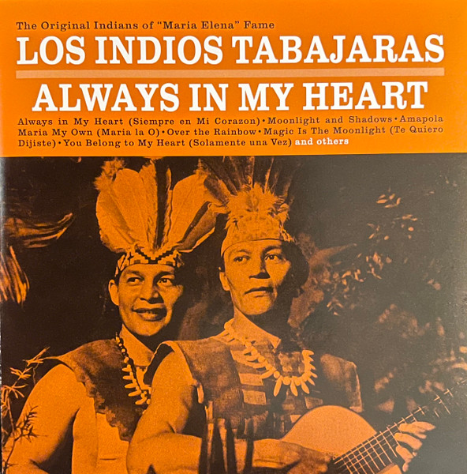

SACD
Always In My Heart
Los Indios Tabajaras
Media: NM · Sleeve: NM
CA$50.00
Discogs SuggestedCA$74.41
Discogs MedianCA$74.41
Discogs HighCA$74.41
- Physical Copy ID
- BB-SACD-122
- Year
- 2014
- Label
- RCA
- Catalog #
- 7 43218 99002 1
- Country
- HKHong Kong
- Genre / Style
- Latin, Folk, World, & Country · Easy Listening